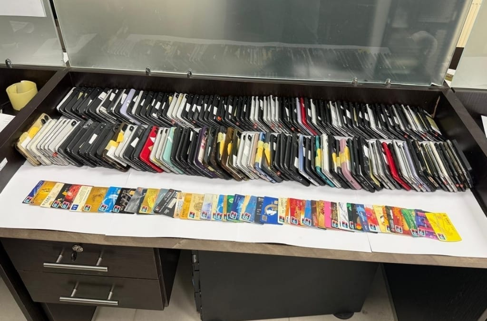

Interpol's Operation Ramz marks the first large-scale cross-regional law enforcement collaboration in the Middle East and North Africa, involving 13 countries. Over five months, the operation identified nearly 583 suspected cybercriminals, shut down phishing-as-a-service infrastructure, and notified thousands of victims. While arrest numbers are modest compared to other regions, the operation established critical channels for threat intelligence sharing and laid the groundwork for a long-term regional cyber operational framework. The initiative highlights growing cooperation between law enforcement and private cybersecurity firms to combat cybercrime that transcends borders.
Interpol的Operation Ramz是中东和北非地区首次大规模跨境执法合作，涉及13个国家。在五个月的行动中，识别了近583名网络犯罪嫌疑人，关闭了钓鱼即服务基础设施，并通知了数千名受害者。尽管逮捕人数相比其他地区较少，但该行动建立了关键的情报共享渠道，为长期区域网络行动框架奠定了基础，凸显了执法机构与私营网络安全公司之间日益增强的合作。
